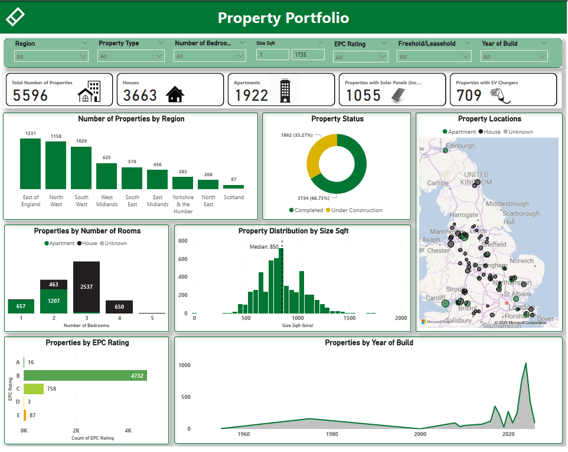

A unified Power BI product that gives finance, operations and investment teams a single, trusted source of truth across a 7,500+ property build-to-rent portfolio — covering occupancy, lettings, arrears, rental performance and compliance.
Lloyds Living operates a large, growing build-to-rent (BTR) portfolio with homes managed across a mix of in-house teams and external managing agents. Performance data — income, budgets, lettings, arrears, expenditure, stock and compliance — arrived in different shapes, on different cadences, from different sources. Reporting was largely manual, which made a single, reconciled view of the portfolio slow to produce and hard to trust.
As Assistant Data & Reporting Manager, I own the analytics product that sits on top of this data — translating raw operational and financial feeds into the metrics the business actually steers by.
A single, governed Power BI analytics product built on a curated Gold-layer model, distributed as a managed app with role-level security. The work spanned the full lifecycle — data modelling, DAX, report design, and rollout.
At the core is one star-schema semantic model — conformed dimensions for property, agent, region, time and tenancy, with fact tables for income, arrears, lettings and expenditure. A single model means every report area calculates metrics the same way, so occupancy on the executive page reconciles exactly with occupancy on the lettings page.
Governed distribution. The model is published through a Power BI app with row-level security and audience-based access, so each team sees a tailored, trusted view from the same single source of truth.
Key measures — occupancy, void loss, rental income vs budget, ERV vs achieved rent, time-to-let, arrears and compliance status — are defined once in DAX and reused everywhere. Supporting automation (Python, VBA) streamlines the monthly refresh so the model is dependable rather than hand-assembled.
